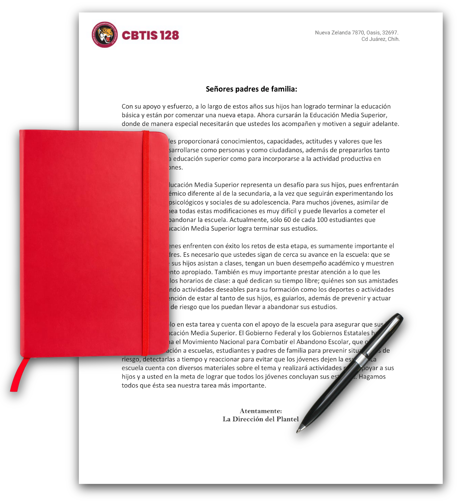

Mensaje del Director Mensaje del Director
Mensaje del Director Mensaje del Director Con su apoyo y esfuerzo, a lo largo de estos años sus hijos han logrado terminar la educación básica y están por comenzar una nueva etapa. Ahora cursarán la Educación Media Superior, donde de manera especial necesitarán que ustedes los acompañen y motiven a seguir adelante.
Esta nueva fase les proporcionará conocimientos, capacidades, actitudes y valores que les servirán para desarrollarse como personas y como ciudadanos, además de prepararlos tanto para ingresar a la educación superior como para incorporarse a la actividad productiva en mejores condiciones.
El ingreso a la Educación Media Superior representa un desafío para sus hijos, pues enfrentarán un sistema académico diferente al de la secundaria, a la vez que seguirán experimentando los cambios físicos, psicológicos y sociales de su adolescencia. Para muchos jóvenes, asimilar de manera simultánea todas estas modificaciones es muy difícil y puede llevarlos a cometer el grave error de abandonar la escuela. Actualmente, sólo 60 de cada 100 estudiantes que ingresan a la Educación Media Superior logra terminar sus estudios.
Para que los jóvenes enfrenten con éxito los retos de esta etapa, es sumamente importante el apoyo de los padres. Es necesario que ustedes sigan de cerca su avance en la escuela: que se aseguren de que sus hijos asistan a clases, tengan un buen desempeño académico y muestren un comportamiento apropiado. También es muy importante prestar atención a lo que les sucede fuera de los horarios de clase: a qué dedican su tiempo libre; quiénes son sus amistades y si están realizando actividades deseables para su formación como los deportes o actividades artísticas. La intención de estar al tanto de sus hijos, es guiarlos, además de prevenir y actuar ante situaciones de riesgo que los puedan llevar a abandonar sus estudios.
Usted no está solo en esta tarea y cuenta con el apoyo de la escuela para asegurar que sus hijos concluyan la Educación Media Superior. El Gobierno Federal y los Gobiernos Estatales han puesto en marcha el Movimiento Nacional para Combatir el Abandono Escolar, que ofrece apoyo e información a escuelas, estudiantes y padres de familia para prevenir situaciones de riesgo, detectarlas a tiempo y reaccionar para evitar que los jóvenes dejen la escuela. La escuela cuenta con diversos materiales sobre el tema y realizará actividades para apoyar a sus hijos y a usted en la meta de lograr que todos los jóvenes concluyan sus estudios. Hagamos todos que ésta sea nuestra tarea más importante.
Atentamente:
Dirección del Plantel
Fuente: CBTIS128
somos C.B.T.i.s
Información de Contacto
CBTIS 128, Nueva Zelanda, Oasis
656-619-1934
656-619-1570
informacion@cbtis128.edu.mx